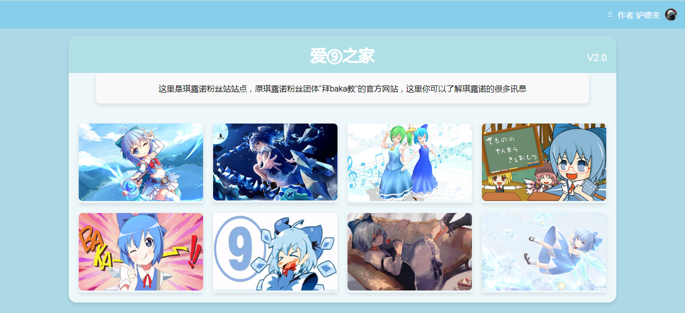

V1.0(2025年7月12日，大版本更新，已完成)
1.主页文章，包括粉丝团体介绍，入教指南，教规
2.更新功能:东方音乐室
V1.5(7月15日，已完成)
1.更新功能:东方二创视频室，琪露诺计算器，图片留存器，幻存神签抽取器
V1.8(8月10日，已完成)
1.工具箱功能:包括计算器，凯撒密码加密解密，随机数生成，温度单位转换，猜数字游戏，随机颜色代码生成
V1.85(8月12日，已完成)
1.工具箱新增:废话文章生成器
V1.88(8月15日，已完成)
1.工具箱新增:图片转文字功能
V2.0(9月16日，大版本更新，已完成)
1.主页更新，增加功能板块，页面更加整洁
2.主页新增菜单功能，快速查找有关内容
3.作者b站链接移动到了主页可以更为便捷的找到
4.主页新增访问次数和建站天数记录器
5.删除了不必要的文章
6.主页和粉丝团体“⑨教”介绍页面分开，介绍页面单独成一个网页
7.这个版本开始加入“⑨教”需要进行专门的琪露诺知识问答
8.新增东方知识问答功能，新增琪露诺图片库，内置50余张琪露诺美图，新增东方下载器功能，允许访客下载资源。
9.幻存神签页面和图片留存器分开
V2.1（12月28日，已完成）
1.更新了贺图室，每逢节日这里会更新一张贺图
2.更新了一张2026年元旦贺图
V2.2（2026年1月19日，已完成）
1.更新了游戏室，用来存放自制游戏
2.更新了介绍pony社的页面
3.给网页添加了logo图标
4.删除了访问次数，建站天数记录器以及底栏
V2.25（2026年2月17日，已完成）
1.贺图室添加了两张春节图片
V2.5（2026年4月15日，已完成）
1.更新了音乐室主页
V2.6（2026年4月17日，已完成）
1.修改了音乐室部分歌曲无法播放的BUG
2.改良音乐室部分UI
V2.8（2026年4月25日，已完成）
1.上传了要用的图片，文件，以及部分页面
V3.0（2026年5月1日，大版本更新，已完成）
1.修缮了音乐室里的曲目错误
2.建设了爱⑨之家V3.0的主页（3月13日建立，三次迭代）
3.修复了建站日期技术的功能，移动到了顶栏
4.更新了菜单的样式，添加了滚动功能
5.添加了轮播图，可以播放3张图片
6.添加了主页功能区，功能区添加了随机东方曲，随机琪露诺图片，天气查询，日历，每日东方角色，更新日志
7.主页添加了版权信息
8.添加多种新功能和页面：琪露诺旋转器，fumo抽取器，雷达图生成器，原创画室，琪露诺语音助手，随机有趣的网页，符卡查询器，东方人物时钟
9.删除了贺图室
10.重新添加了建站日期计算板块
11.更新原有页面：⑨教页面，pony社页面，游戏室
12.为所有网页添加了logo
V3.1（2026年5月5日，已完成）
1.更改了⑨教页面，寒境少女绘幻想的页面
2.更新了入教测试页面，增多题型，加大了题目难度
过去网页的样子
V1.0
一代版本（2025年7月12日-2025年9月21日16:39）

V2.0
二代版本（2025年9月21日-2026年5月1日11:00）

返回